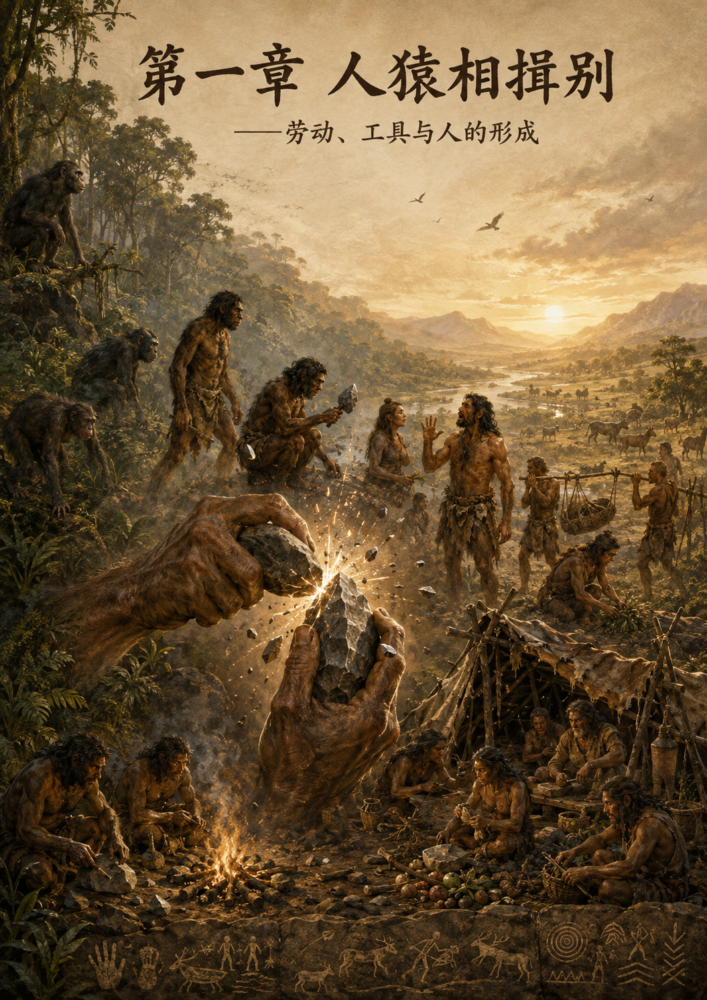

GPCR · Great Proletarian Cultural Revolution
《贺新郎·读史》新解
从“人猿相揖别”到“歌未竟，东方白”：从经典原著出发，讨论劳动、共同体、家庭、私有制、阶级、国家与人的解放。

这不是转载或资料汇编，而是作者围绕《家庭、私有制和国家的起源》与《贺新郎·读史》写作的一组阅读注解。网站用于保留完整篇幅、经典引文、原文出处与章节之间的历史联系。 阅读序言 →
CONTENTS
九章，一次连续的历史运动
人猿相揖别
人是怎样成为人的？
《家庭、私有制和国家的起源》讨论家庭、私有制和国家，第一章却没有从这三个名称中的任何一个开始。恩格斯先写“史前各文化阶段”，考察人怎样扩大生活资料的来源，怎样使用火、石器、弓箭，后来又怎样制陶、畜牧、耕作和冶炼…
只几个石头磨过
生产力低下时代的共同体
毛泽东把人类最漫长的幼年压缩在几个石头里。工具粗陋，力量有限，历史却已经开始积累。人同人的关系也不再是动物群体的简单重复：他们共同劳动，共同占有生活条件，按照血缘组织自己，也在这种组织中生产和抚育下一代。…
铜铁炉中翻火焰
生产力怎样撕开共同体
石头磨过以后，火焰开始改变石头不能改变的世界。矿石在炉中熔化，铜和锡铸成青铜，铁斧劈开森林，铁犁翻动更深的土地。畜群在人的照管下繁殖，谷物在收获以后留下种子，手工业从日常劳动中逐渐分离。人类越来越能够通过驯养、…
不过几千寒热
财产怎样进入家庭
炉火没有停在炉中。畜群繁殖，金属保存，财富开始能够越过一次消费，也越过一个人的生命。财产既然能够留下，便要求一个继承人；继承人必须被确认，亲属关系因此承受了生产关系的压力。…
人世难逢开口笑
私有制怎样创造阶级
铜铁炉中翻出的不只是工具。畜群在繁殖，土地在耕作，金属和谷物能够保存；特殊占有又经过家庭和继承取得稳定形式，成为能够越过占有者生命的家庭私产。上一代留下的不再只是经验和血缘，还有畜群、土地、工具、储备，以及取得…
上疆场彼此弯弓月
阶级矛盾与国家的诞生
弓箭比国家古老，战争也比国家古老。猎人可以把弓箭射向野兽，部落可以把弓箭射向外敌；只凭疆场上的厮杀，不能说明为什么社会内部后来会出现军队、警察、监狱、税收和官吏。国家不是一张更大的弓。真正需要解释的，是原来掌握…
流遍了，郊原血
文明究竟意味着什么
郊原上的血不是文明道路旁边的一场意外。修筑城墙的手也被锁链束缚，开垦土地的铁器也被铸成兵器，记录收获的文字也记录贡赋和债务。城市、商业、科学、艺术、法律和国家扩大了人类的力量；奴隶制、战争、贫富分化和阶级统治，…
五帝三皇神圣事
究竟是谁创造了历史
帝王当然参与历史。诏令能够征税，军队能够攻城，法律能够改变土地和身份，统治者的一次决定也可能使千万人生死易位。问题不在于这些人是否存在、是否行动，而在于历史为什么总把他们的行动写成一切行动的原因，把生产军粮、修…
歌未竟，东方白
家庭、私有制和国家会走向哪里
东方已经发白，太阳却还没有升起。把黎明当作白昼，会把尚未完成的斗争写成已经到手的胜利；把黑夜当作永恒，又会把历史形成的制度说成不可改变的自然。《家庭、私有制和国家的起源》不仅证明家庭、私有制和国家曾经有一个开端…
人的形成
→原始共同体
→生产力与剩余
→家庭与财产
→私有制与阶级
→国家与文明
→历史主体与未来